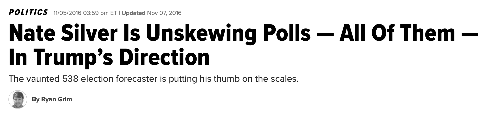
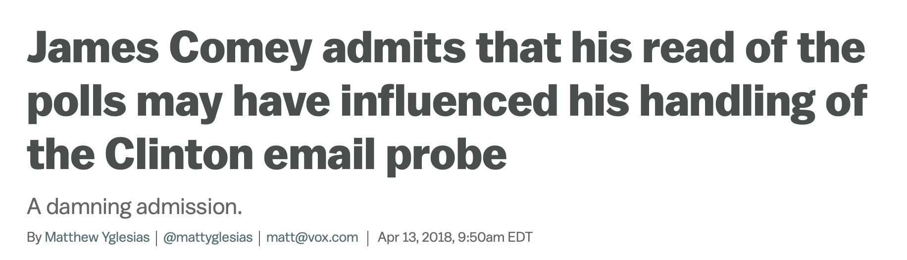

3. Be probabilistic
Why? Readers have the best understanding of the horse race when presented with probabilities

Figure 4: Source: Westwood, Messing and Lelkes (2019)
class: center, inverse
A few guiding thoughts:
class: center, inverse
–
–
–
Figure 1: Source: Natalie Jackson; Huffington Post (2015)
Figure 2: Source: G. Elliott Morris; The Economist (2019)

When presented with competing forecasts, people grab onto the ones that comport with their world-view
“For the polls to be wrong, there wouldn’t need to be one single 3-point error. All of the polls ― all of them, as Brianna Keilar would put it ― would have to be off by 3 points in the same direction.”
“If you want to put your faith in the numbers, you can relax. She’s got this.”

James Comey, 2018, “A Higher Loyalty”: > “It is entirely possible that because I was making decisions in an environment where Hillary Clinton was sure to be the next president, my concern about making her an illegitimate president by concealing the restarted investigation bore greater weight than it would have if the election appeared closer or if Donald Trump were ahead in all polls.”
Figure 3: Source: Nate Silver; FiveThirtyEight (2016)
class: center, inverse
Figure 4: Source: Westwood, Messing and Lelkes (2019)
Figure 5: Source: Nate Silver; FiveThirtyEight (2016)
class: center
Email: elliott@thecrosstab.com
Twitter: [@gelliottmorris](http://www.twitter.com/gelliottmorris)
_These slides were made with the xaringan package for R from Yihui Xie. They are available online at https://www.thecrosstab.com/slides/2019-08-30-apsa/_